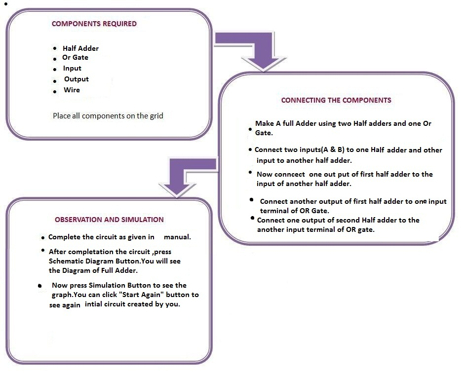

Introduction
Semi Custom Design
Semi Custom design is alternative to full-custom design where we use standard library components such as half adder to make full adder.Standard cell libraries are themselves designed using full-custom design techniques.
A half adder adds two one-bit binary numbers A and B. It has two outputs, S and C (the value theoretically carried on to the next addition); the final sum is 2C + S. The simplest half-adder design, pictured on the right, incorporates an XOR gate for S and an AND gate for C. Half adders cannot be used compositely, given their incapacity for a carry-in bit. A full adder adds binary numbers and accounts for values carried in as well as out. A one-bit full adder adds three one-bit numbers, often written as A, B, and Cin; A and B are the operands, and Cin is a bit carried in (in theory from a past addition). The circuit produces a two-bit output sum typically represented by the signals Cout and S, where \mathrm{sum} = 2 \times C_{out} + S. Using Semi custom Design We can make full adder using two Half adders and one OR Gate.
A half adder adds two one-bit binary numbers A and B. It has two outputs, S and C (the value theoretically carried on to the next addition); the final sum is 2C + S. The simplest half-adder design, pictured on the right, incorporates an XOR gate for S and an AND gate for C. Half adders cannot be used compositely, given their incapacity for a carry-in bit. A full adder adds binary numbers and accounts for values carried in as well as out. A one-bit full adder adds three one-bit numbers, often written as A, B, and Cin; A and B are the operands, and Cin is a bit carried in (in theory from a past addition). The circuit produces a two-bit output sum typically represented by the signals Cout and S, where \mathrm{sum} = 2 \times C_{out} + S. Using Semi custom Design We can make full adder using two Half adders and one OR Gate.

Theory
Semi custom VLSI design can be cell based or array based. In cell based design, the designer reuses the cells that have already been designed and stored in the library as a part of the current design. In array based design, the designer is provided with a chip consisting of configurable logic blocks as generic building blocks. The designer either needs to finish the topmost metallic interconnect routing to connect the different configurable logic blocks or needs to program the switches on interconnect through electric fields. In the former case, the array is called a mask programmable gate array and in the latter case, the array is called a field programmable gate array. With semi custom VLSI chip, there may be a slight degradation in performance with respect to an equivalent full custom VLSI chip. But the minimization of the design cycle time due to reusability of components from the library makes it outperform its full custom counterpart and has earned a huge popularity amongst the designers over the years. Full custom designs are nowadays limited to only performance critical applications and in case a new technology library is adopted for designing a circuit.

Objective
In this Experiment we have to make library componets (Half Adder and Or Gate) using Nmos and Pmos.User will use these componets to creatie a full adder circuit.We have to provide user a interface where user can drag these components from library and can make the circuit.And after creating circuit ,user can have a option to create schematic diagram and simulation of that circuit.

Experiment

Manual

Quizzes


Procedure


Further Readings
- N.H.E. Weste, D. Harris, A. Banerjee, "CMOS VLSI Design", Pearson Education, Third Edition, 2007.
- J.M. Rabaey, A.Chandrakasan, B. Nikolic, "Digital Integrated Circuits: A Design Perspective", Prentice Hall of India, Third Edition, 2008.
- Y. Leblebici, S.M. Kang, "CMOS Digital Integrated Circuits: Analysis and Design", McGraw Hill, International Edition, 2008
- A high Speed 8 Transistor Full Adder Design using Novel 3 Transistor XOR Gates Shubhajit Roy Chowdhury, Aritra Banerjee, Aniruddha Roy, Hiranmay Saha, IJECE